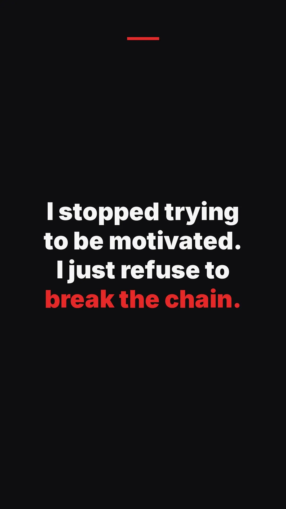

REGIME: Daily Habit Tracker · don't break the chain
A don't break the chain app for one finished day
Mark the day only when the work is done. Miss a day and the chain resets.
One streak for the finished checklist. A DAY COMPLETE stamp when every line is done.
Free download with in-app purchases. 7-day free trial on the yearly plan ($29.99/yr).
Don't break the chain is a method, and a search for an app that will keep it honest. The hard part is deciding what counts as a link. "I opened the app" is worthless. "I finished the day's real work" is the practice.
How the story is usually told
The version people repeat is this. A younger comedian asks Jerry Seinfeld how to get better. The advice, as it is commonly told, is to get a calendar and a marker. Every day you write jokes, you put an X on that day. After a few marks you have a chain. Your only job is not to break it.
Treat that as a method retold for years, not as a quotation this page can verify from Seinfeld himself. The telling is secondhand. The calendar is the scoreboard. The work is the one practice you said the X means. Twelve promises on the same X is how the chain becomes fake.
One chain, not twelve little ones
REGIME uses the same pressure, with a checklist instead of a paper calendar. Finish the daily non-negotiables and the streak grows. Miss a day and the streak resets. There is one chain for the finished day, not a separate streak per habit. Either the day is complete, or it is not.
The checklist is the definition you wrote in advance, which is stricter than deciding in the moment whether today counts. Hold a habit to commit it, and only after that line is done. When every non-negotiable is done, the day gets a DAY COMPLETE stamp. The stamp is the X. Share the milestone if you want. You do not need an account. Habit entries stay on your device.

What the stamp is for
The stamp appears when the list is done. If one line is still open, the day has not grown the streak. Drawing the X for "most of it" is how the chain becomes fiction.
Eight ranks sit on the same chain, from RECRUIT toward IMMORTAL. They are not a purchase. The weekly review looks at the last seven days. If the same line is the one you skip, shrink the list.
Why a reset should hurt is on why a hard streak. The streak page without this backstory is the habit tracker with streaks. Choosing the lines is daily non-negotiables. A fixed season of rules is the monk mode tracker.
When the chain breaks
It will break. The method does not ask you to pretend the gap is still a link. Start again today. The break tells you the list was too long, or the day was actually missed. If you need planned days off inside the streak, this is the wrong tool. A per-task schedule is a different product, on the Streaks app alternative page. An RPG that absorbs a miss is the Habitica alternative.
What it costs
Free download. Habit tracking after onboarding requires Pro: weekly, yearly (7-day free trial) or lifetime. Weekly is $4.99, yearly is $29.99, and lifetime is $49.99. Only the yearly plan has the trial. Apple shows the price before you confirm. Cancel in your Apple Account settings.
FAQ
- Did Jerry Seinfeld invent this app?
- No. The chain method is a story commonly told about his advice to a younger comedian: mark the calendar on days you do the work, and do not break the chain. REGIME is an independent habit tracker by Ilias Aberkane. It is not his product and this page does not claim a verified quotation.
- Does each habit have its own chain?
- No. REGIME grows one streak when you finish the daily checklist. A missed day resets that streak. It is not a separate chain for every habit.
- What is the DAY COMPLETE stamp?
- The mark the day gets when every non-negotiable is done. Hold each habit to commit it. The stamp is not partial credit. That finished day is what grows the streak. You can share the milestone if you want.
- What happens if I miss a day?
- The streak resets. You can start again today. The chain does not stay intact because most of the list was done. A broken day is a broken day.
- Do I need an account?
- No. Habit entries stay on your device. There is no REGIME account.
Get REGIME
Free download with in-app purchases. 7-day free trial on the yearly plan ($29.99/yr).
Related: daily non-negotiables · monk mode · streak chain · why the streak is hard · 75 Hard · vs soft apps · vs Habitica · vs Streaks · the app website · 30 day challenge · 75 Soft · self discipline · offline tracker · ranks · consistency · self accountability